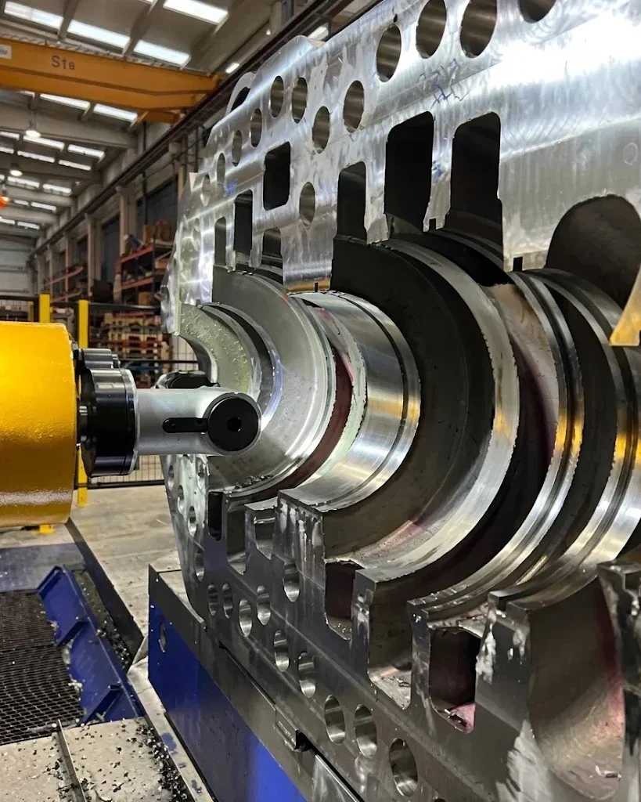
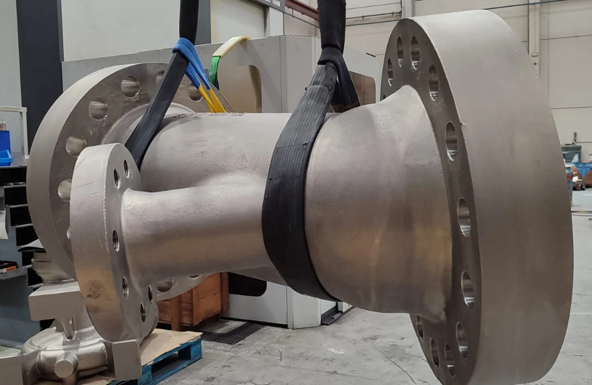
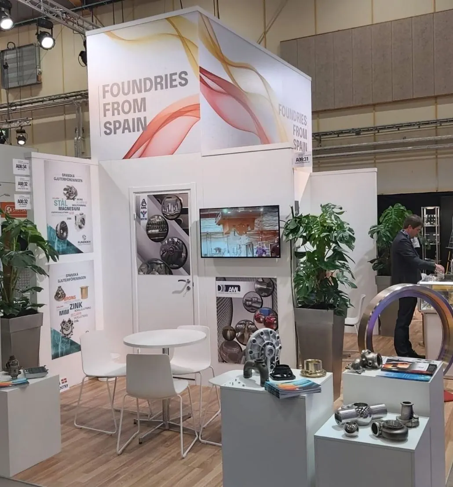

Lecumberri, Navarra
Mecanizado de piezas de acero fundido bajo plano.
Mecanizado CNC, control dimensional y ensayos en nuestra planta, 24 horas en tres turnos. Piezas de hasta 12.000 kg.
Quiénes somos
Planta propia en Lecumberri desde 2012.
Somos AML Centrifugal Casting. Desde 2012, en nuestra planta de Lecumberri (Navarra), mecanizamos con precisión piezas de acero fundido con tolerancias ajustadas, y nosotros mismos las medimos y ensayamos antes de entregarlas.
Trabajamos bajo pedido, desde una sola pieza hasta series con entregas programadas. Tratamos planos y documentación técnica con estricta confidencialidad y seguimos cada pieza de principio a fin, con trazabilidad completa. Clientes en toda España y fuerte presencia internacional.

+15
Años de actividad
24 h
Planta en tres turnos
12.000 kg
Peso máximo de pieza
± 0,005 mm
Tolerancia en 5 ejes
Cómo trabajamos
Proceso de fabricación.
Trabajamos 24 horas, en tres turnos. Cada pieza pasa por cinco fases, todas en nuestra planta, y la tenemos identificada en cada una.
- 01
Recepción
Recibimos la pieza en bruto y la identificamos.
- 02
Mecanizado
Mecanizamos en CNC según plano, con programación CAM en Siemens NX.
- 03
Control dimensional
Medimos cada pieza en tridimensional y emitimos su informe.
- 04
Ensayos
Pruebas de presión, líquidos penetrantes y pruebas de helio.
- 05
Expedición
Preparamos la documentación, embalamos y enviamos.
Capacidades
Fresado, torneado, mandrinado y soldadura.
Mecanizamos, inspeccionamos y ensayamos en nuestra propia planta. Todo el proceso se hace aquí, según su plano y su especificación.


Materiales
Materiales que mecanizamos.
Mecanizamos aceros al carbono, aleados, de herramientas, martensíticos, inoxidables austeníticos, dúplex y superdúplex en estado fundido, y aleaciones base níquel. Si trabaja con otra aleación, consúltenos con el plano y la especificación.
- WCBAcero al carbonoA216 WCBEN 1.0619
- CF8InoxidableA351 CF8EN 1.4308
- CF8MInoxidable con MoA351 CF8MEN 1.4408
- 4ADúplexA890 4AEN 1.4470
- 5ASuperdúplexA890 5AEN 1.4469
Normas ASTM y equivalentes EN orientativos.
- Aceros al carbono para usos generalesWCB, WCC, 1.0619, GS45, GS52, GS60
- Aceros al carbono para baja temperaturaLCB, LCC, GS20Mn5, GS212Mn5
- Aceros aleadosWC1, WC6, WC9, C5, C12
- Aceros aleados para baja temperaturaLC1, LC2, LC3
- Aceros de herramientasGS42CrMo4
- Aceros martensíticos y martensítico-ferríticos, para servicios generales y baja temperaturaCA15, CA6NM, 1.4008
- Aceros inoxidables austeníticos, dúplex y superdúplex, para usos generales y baja temperatura1.4408, 1.4468, 1.4470, 1.4519, 1.4308, 1.4552, 1.4581, CF3, CF3M, CF8, CF8M, CF8C, CN7M, CN3M, dúplex, superdúplex
- Aleaciones base níquel2.4883, 2.4697
Calidad
Control dimensional y ensayos.
Controlamos cada fase, desde el plano hasta la expedición. Nuestro sistema de gestión de la calidad está certificado según ISO 9001.
- Control dimensionalEn máquina tridimensional, con informe por pieza.
- Plano globeadoPrevio a la fabricación de cada referencia nueva.
- TrazabilidadDe cada pieza durante todo el proceso.
- EnsayosPruebas de presión, líquidos penetrantes y pruebas de helio.

Sectores
Sectores con los que trabajamos.
Mecanizamos piezas para petróleo y gas, naval, nuclear, ferroviario, sanitario, industria y estructuras.

- SanitarioPiezas para equipos del sector sanitario.
- EstructuralPiezas de acero fundido para estructuras y uniones.
- Otros sectoresConsulte su aplicación.
Ferias
Próximas ferias.
Estas son las próximas ferias en las que estaremos. Si va a asistir, pídanos una reunión y le reservaremos un tiempo en nuestro stand.
1–3 dic. 2026
Valve World Expo 2026
Düsseldorf, Alemania. Válvulas industriales.
Pabellón 3, stand E27
9–12 mar. 2027
DSEI Germany 2027
Hannover, Alemania. Defensa.
Stand por confirmar

Solicitud de información
Solicitud de oferta.
Escríbanos para pedir una oferta, hacernos una consulta técnica o presentarse como proveedor.
Industrialdea, A-7
31870 Lecumberri (Navarra)
Carga y descarga
- Horario
- Lunes a viernes, de 8:00 a 17:00
- Acceso de camiones
- Entrada principal
- A la llegada
- Llamar al timbre de la entrada principal